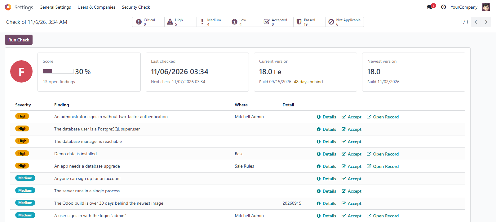
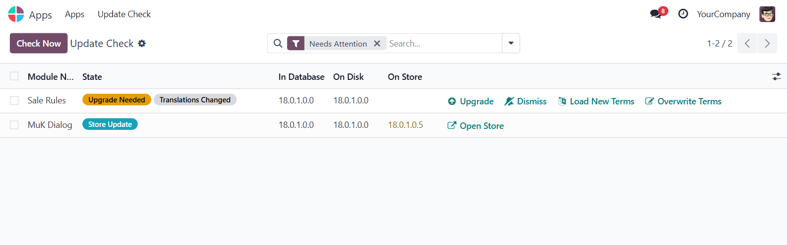
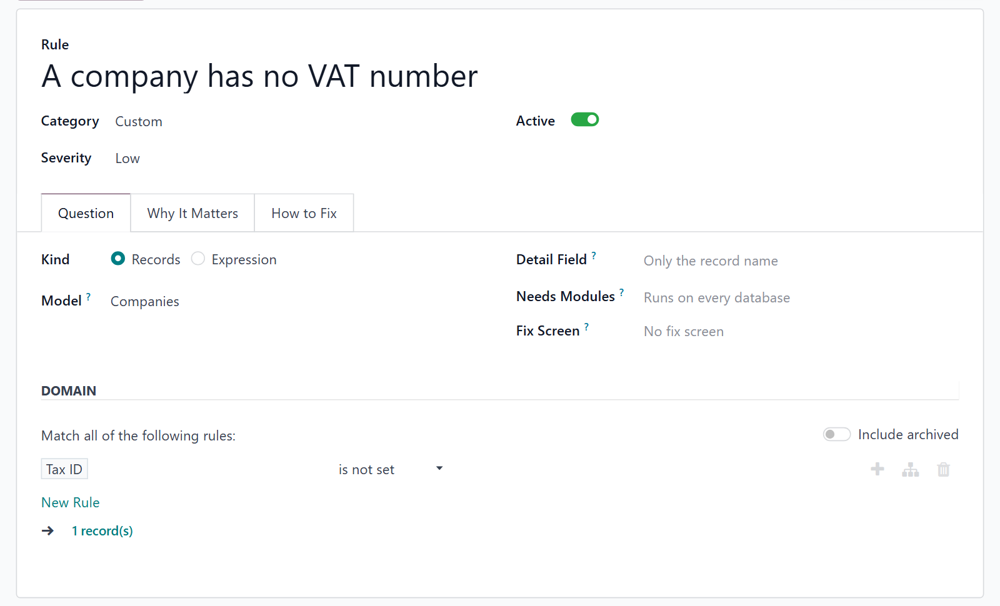

One score and one list cover unsafe settings, exposed pages, an outdated Odoo, new store versions and real upgrade needs. It reports what it finds and changes nothing on its own.
Every open finding says why it matters and how to fix it, and opens the screen where you do. Accept what does not apply to you.
An app is flagged when its data, migrations, fields or constraints changed. JavaScript and Python methods do not count.
Change rules in the browser. A website rule simply does not apply until Website is installed, and needs no dependency on it.

The rules run once a day and whenever you press Run Check. Each one asks the database a small question, and an empty answer passes.
The master password, the database manager, the database filter, two-factor sign-in, login cooldown and open sign-up.
The public page that lists your apps and the exact Odoo version, once Website is installed.
An unsupported series, a newer series, and a build behind the newest official image.
Store versions and changelogs. An app that is not on the store simply shows no version.
Accept a finding with a reason and an end date. It stops counting until then, and comes back after.
The Administrators channel hears about each new finding once, not every day it stays open.
A new file on disk is not always a reason to upgrade. The list under Apps separates a newer store version, an upgrade the database really needs, changed translations and code that went missing. A normal upgrade keeps existing translations, so changed wording gets its own button.


Turn a rule off or give it your own severity, and an upgrade keeps your choice. A new rule is a model with a domain, or one Python expression. Every rule runs in a savepoint that is always rolled back, and a rule that breaks shows its error while the others carry on.
They send the technical names of installed non-Odoo apps to apps.odoo.com and read the official image tags from Docker Hub, with no versions and no database name. Neither is a documented API, so a check can stop working if the source changes.
The shipped rules are a start. What your company has to check goes into your own addon, and appears in the same list with the same score.
Another module ships its rules as ordinary records, with their own severity and explanation.
For anything longer than one expression, the rule calls a method of your module and reports its answer.
A rule names the modules it needs as text. Without them it shows Not Applicable, and the module loads either way.
What you get for free, and what has to be paid work.
Issues and merge requests are welcome on the public repository. They are read — but no response time is promised.
A rule set built for your company, or a fix on a deadline, is paid work — quoted up front. Write to sale@mukit.at.
LGPL-3. Use it, change it, ship it inside your own work — no licence key, no database count.
Modules written for your process, on your Odoo version.
Odoo joined up with the systems you already run.
Hosting, deployment and upgrades you do not have to watch.
Your team taught the parts of Odoo they actually use.
An agreement, so an answer does not depend on who is free.
Odoo.sh or on-premise, Community or Enterprise. The build check reads the official Docker image or Debian package.
None required. Settings › General Settings › Security Check turns off the online checks and the notifications.
Depends on base_import_module, base_setup and mail, nothing external.
Settings › Security Check for the score and the findings, Apps › Update Check for your apps.
Rules you turned off, your severities and accepted findings all stay.
MuK IT GmbH, Vienna. Author and maintainer.
Tell us what has to be checked and on which Odoo version, and we will tell you how it fits. MuK IT — Austrian Odoo partner, Vienna.